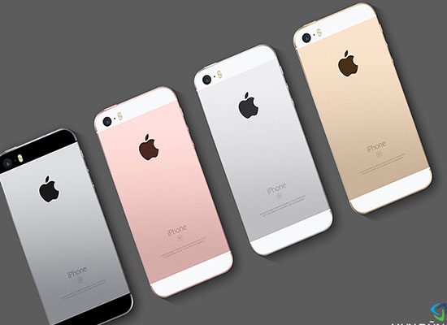
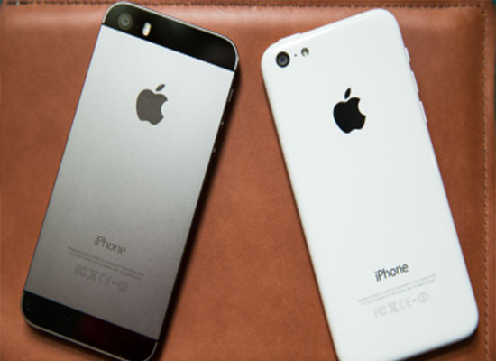

Có nên mua iPhone 5S xách tay
iPhone 5S xách tay là hàng do cá nhân nào đó, có thể là người đi du lịch, du học sinh tại các nước hay tiếp viên hàng không,… mua trực tiếp từ nước ngoài và mang về Việt Nam qua đường hàng không.
Dưới đây là một số thông tin giúp bạn đưa ra được quyết định có nên mua iPhone hàng xách tay hay không:
1. Giá cả.
Đây là ưu thế của hàng xách tay. Vì không phải chịu bất cứ loại thế nào, không phải qua khâu trung gian nên iPhone 5S xách tay có giá thấp hơn nhiều so với giá tại các siêu thị, cửa hàng.
2. Nguồn gốc, xuất xứ.
Phone xách tay có thể được mang về từ nhiều nguồn khác nhau như : Mỹ, Hong Kong, Đài Loan, Singapo...
Nguồn gốc không rõ ràng nên khi mua có thể sẽ gặp phải hàng giả, hàng dựng.

Cách kiểm tra iPone chính hãng tại đây
3. Chất lượng sản phẩm.
Đối với chất lượng hàng xách tay thì không có gì khác so với hàng chính hãng tại Việt Nam trừ trường hợp máy đã bị bị thay đổi linh kiện trước khi đến tay người mua.

4. Chế độ bảo hành,hậu mãi.
Đối với hàng xách tay thì chế độ bảo hành chính hãng, hậu mãi là hoàn toàn không nếu có thì đây chỉ là chế độ bảo hành riêng của cửa hàng xách tay, việc sữa chữa, thay thế linh kiện bị lỗi trong quá trính sử dụng sẽ do cửa hàng xách tay sửa chữa nên linh kiện được thay thế có đảm bảo hay không thì chỉ có của hàng mới biết được.

Trên đây là một số điều bạn cần lưu ý khi mua iPhone xách tay, nếu đủ điều kiện tài chính thì bạn nên mua hàng chính hãng để tránh những rắc rối cho mình.
Ngoài ra, bạn có thể tham khảo iPhone máy đã qua sử dụng ở Thegioididong.com, giá cả thấp hơn rất nhiều so với máy mới, đảm bảo là hàng chính hãng bản quốc tế.
Xem thêm:
>>> Làm thế nào để chọn mua điện thoại củ?
>>> Cách kiểm tra iPhone cũ trước khi mua
>>> Cách phân biệt iPhone 7 Plus thật và nhái
>>> Nhận biết iPhone 6s nhái bằng mắt thường